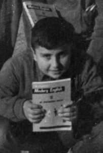

Fernando Alli en la actualidad (2007). Esperamos recibir en breve la fotografía que lo acredite como "infante" del Patronato, de lo contrario, este webmaster tendrá que hacer algún galimatías para poder verlo tal cual era. Pues aquí está, "sacado" de la clase de Inglés. Año 1963.
 |
|